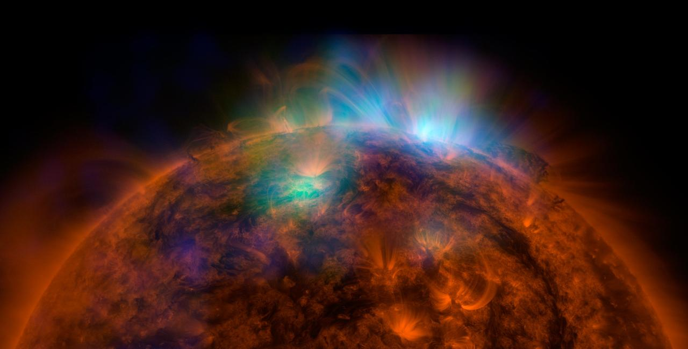
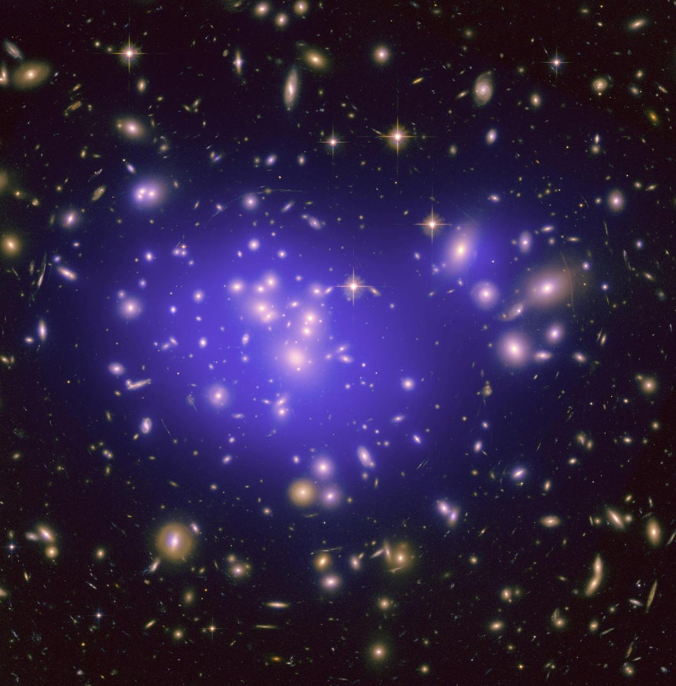

Introduction
 The universe is all of space and time and their contents, including planets, stars, galaxies,
and all other forms of matter and energy. The Big Bang theory is the prevailing cosmological
description of the development of the universe. According to this theory, space and time emerged
together 13.787±0.020 billion years ago, and the universe has been expanding ever since the Big
Bang. While the spatial size, if any, of the entire universe is unknown, it is possible to measure
the size of the observable universe, which is approximately 93 billion light-years in diameter today.
The universe is all of space and time and their contents, including planets, stars, galaxies,
and all other forms of matter and energy. The Big Bang theory is the prevailing cosmological
description of the development of the universe. According to this theory, space and time emerged
together 13.787±0.020 billion years ago, and the universe has been expanding ever since the Big
Bang. While the spatial size, if any, of the entire universe is unknown, it is possible to measure
the size of the observable universe, which is approximately 93 billion light-years in diameter today.
Some of the earliest cosmological models of the universe were developed by ancient Greek and Indian philosophers and were geocentric, placing Earth at the center. Over the centuries, more precise astronomical observations led Nicolaus Copernicus to develop the heliocentric model with the Sun at the center of the Solar System. In developing the law of universal gravitation, Isaac Newton built upon Copernicus's work as well as Johannes Kepler's laws of planetary motion and observations by Tycho Brahe.
 Further observational improvements led to the realization that the Sun is one of a few hundred billion stars in the Milky Way, which is one of a few hundred billion galaxies in the observable universe. Many of the stars in a galaxy have planets. At the largest scale, galaxies are distributed uniformly and the same in all directions, meaning that the universe has neither an edge nor a center. At smaller scales, galaxies are distributed in clusters and superclusters which form immense filaments and voids in space, creating a vast foam-like structure. Discoveries in the early 20th century have suggested that the universe had a beginning and has been expanding since then.
According to the Big Bang theory, the energy and matter initially present have become less dense as the universe expanded. After an initial accelerated expansion called the inflationary epoch at around 10-32 seconds, and the separation of the four known fundamental forces, the universe gradually cooled and continued to expand, allowing the first subatomic particles and simple atoms to form.
 From studying the movement of galaxies, it has been discovered that the universe contains much more matter than is accounted for by visible objects; stars, galaxies, nebulas and interstellar gas. This unseen matter is known as dark matter (dark means that there is a wide range of strong indirect evidence that it exists, but we have not yet detected it directly). The ΛCDM model is the most widely accepted model of the universe. It suggests that about 69.2%±1.2% of the mass and energy in the universe is dark energy which is responsible for the acceleration of the expansion of the universe, and about 25.8%±1.1% is dark matter. Ordinary ('baryonic') matter is therefore only 4.84%±0.1% of the physical universe. Stars, planets, and visible gas clouds only form about 6% of the ordinary matter.
There are many competing hypotheses about the ultimate fate of the universe and about what, if anything, preceded the Big Bang, while other physicists and philosophers refuse to speculate, doubting that information about prior states will ever be accessible. Some physicists have suggested various multiverse hypotheses, in which our universe might be one among many universes that likewise exist.